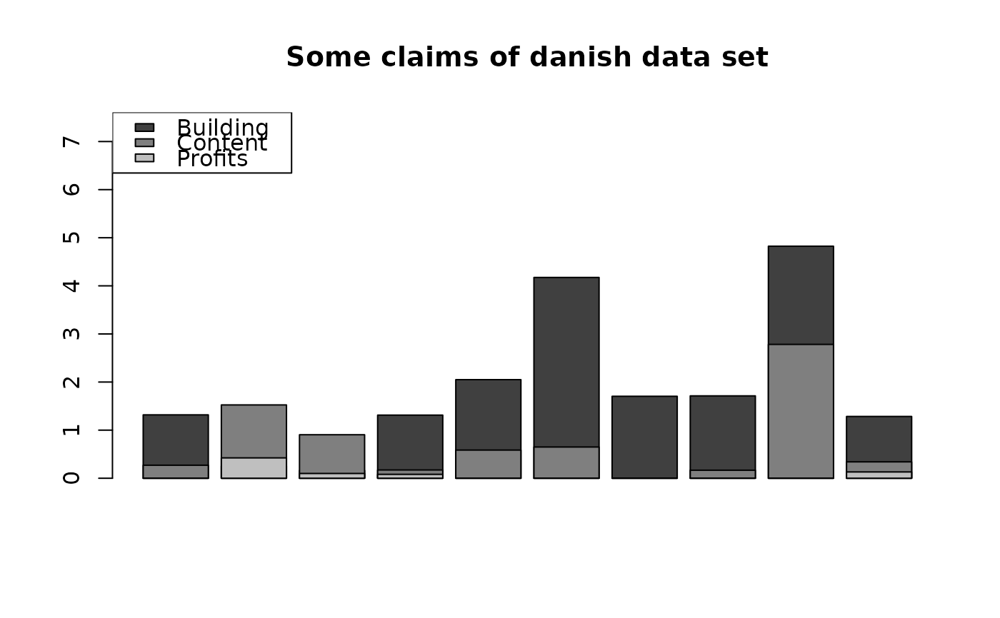

danish.RdThe univariate dataset was collected at Copenhagen Reinsurance and comprise 2167 fire losses over the period 1980 to 1990. They have been adjusted for inflation to reflect 1985 values and are expressed in millions of Danish Krone.
The multivariate data set is the same data as above but the total claim has been divided into a building loss, a loss of contents and a loss of profits.
danishuni contains two columns:
DateThe day of claim occurence.
LossThe total loss amount in millions of Danish Krone (DKK).
danishmulti contains five columns:
DateThe day of claim occurence.
BuildingThe loss amount (mDKK) of the building coverage.
ContentsThe loss amount (mDKK) of the contents coverage.
ProfitsThe loss amount (mDKK) of the profit coverage.
TotalThe total loss amount (mDKK).
All columns are numeric except Date columns of class Date.
Embrechts, P., Kluppelberg, C. and Mikosch, T. (1997) Modelling Extremal Events for Insurance and Finance. Berlin: Springer.
Dataset used in McNeil (1996), Estimating the Tails of Loss Severity Distributions using Extreme Value Theory, ASTIN Bull. Davison, A. C. (2003) Statistical Models. Cambridge University Press. Page 278.
# (1) load of data
#
data(danishuni)
# (2) plot and description of data
#
plotdist(danishuni$Loss)
# (3) load of data
#
data(danishmulti)
# (4) plot and description of data
#
idx <- sample(1:NROW(danishmulti), 10)
barplot(danishmulti$Building[idx], col = "grey25",
ylim = c(0, max(danishmulti$Total[idx])), main = "Some claims of danish data set")
barplot(danishmulti$Content[idx], add = TRUE, col = "grey50", axes = FALSE)
barplot(danishmulti$Profits[idx], add = TRUE, col = "grey75", axes = FALSE)
legend("topleft", legend = c("Building", "Content", "Profits"),
fill = c("grey25", "grey50", "grey75"))
